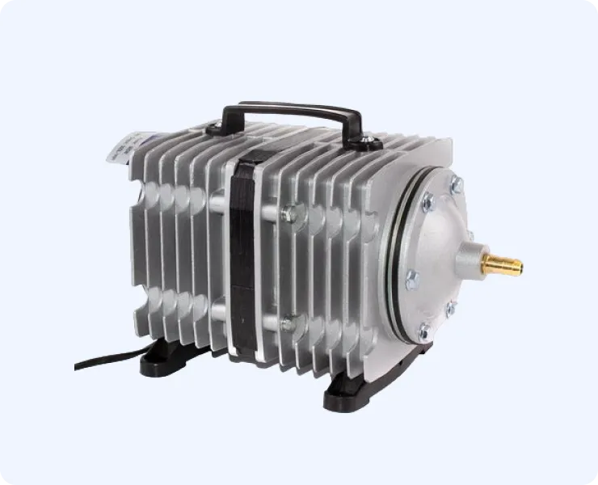

Аэраторы для пруда
Поршневой компрессор ACO-818, 300 л/мин, 385 Вт, для пруда до 36000л
Цена и наличие
Цена уточняется. Нет в наличии.
Данные на 23.11.2026.
Характеристики
- Бренд
- SunSun
- Тип аэратора
- поршневой
- Для прудов
- до 18 000 — 36 000 л
- Мощность
- 385 Вт
- Производительность
- 300 л/мин
- Длина кабеля, м
- 1,4 м
- Давление
- 0.040 MPa
- Диаметр входного патрубка
- ⌀14 мм
- Диаметр выходного патрубка
- ⌀12 мм( 1шт.) или ⌀4мм (20шт.)
- Максимальная глубина работы (метры)
- 5 м
- Производительность, л/мин
- 300 л/мин
- Страна производитель
- Китай
- Уровень шума
- Средний, 60 дБ
Описание
Компрессор – один из основных элементов технического оснащения искусственного водоема и любой аквасистемы, который служит для насыщения воды кислородом и создает дополнительное движение водных масс.
АЭРАТОР ДЛЯ ПРУДА ACO-818, 300 Л/М, 0,5 БАР, 385 ВТ Поршневой, воздушный компрессор. Компрессор универсальный, подходит для больших аквариумов, прудов, септиков, рыбных хозяйств, ресторанов с живой рыбой, пузырьковых панелей, коптилен. Компрессор от легендарного бренда SUNSUN, который больше тридцати лет является мировым лидером в сфере производства оборудования для прудов и аквариумистики. Корпус из специального заказа алюминия ZL102, обеспечивающий эффективное выделение тепла. Электромагнитный мотор выдает прямоточный поток воздуха, который является лучшим решением для компрессоров данного типа. Новый современный материал SF1, из которого изготовлены поршень и цилиндр, гарантированно износостойкость, долговечность и стабильность работы. Компрессор имеет не только выходной штуцер, но и входной, что позволяет подсоединить любой фильтр или шланг. Также компрессор можно использовать как вакуумный насос. Фильтрация воздуха на входе в компрессор и отсутствие смазки – это чистота воздуха на выходе. Компрессор оснащен резиновыми опорами для снижения вибрации. Энергосберегающий, без встроенной регулировки потока, регулировка потока осуществляется внешними кранами. Компрессор стабильно подает большой объем воздуха и обеспечивает высокое давление. Компрессор рассчитан на режим работы: 24 часа, 7 дней в неделю.
Дополнительно
В комплект с компрессором входит: Шланг, длина 15 см. Ø 12/14 мм. Латунный штуцер с резьбой и диаметром Ø 12 мм. Разветвитель потока на 20 выходов (входной канал Ø 12 мм. Выходные каналы Ø 4 мм.). Инструкция. К этому компрессору вам понадобится: Шланг Ø 4/6 мм Распылители с диаметром входного штуцера Ø 4 мм. Краны для регулировки потока с диаметром входного штуцера Ø 4 мм.